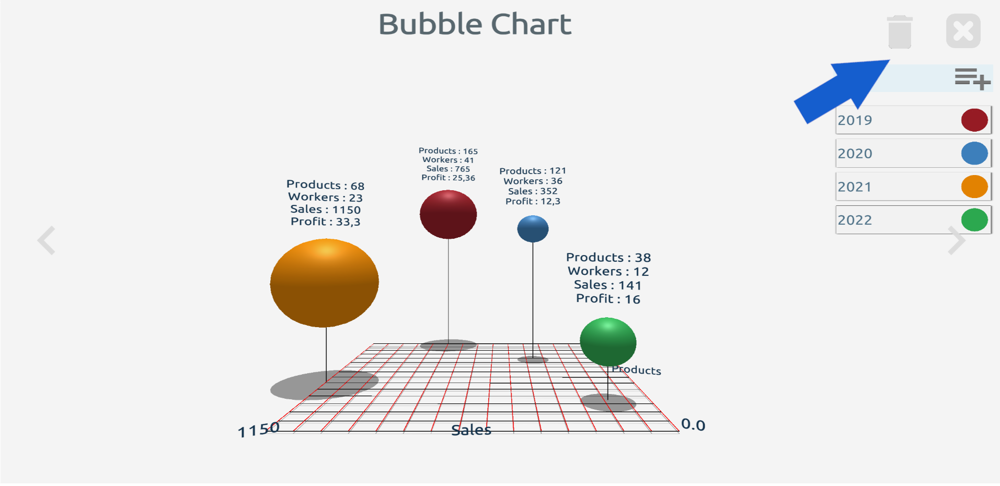

Grafik Oluşturma
Ana sayfada yer alan artı şeklindeki ekle butonuna tıklayarak oluşturmak istediğiniz grafik çeşidini seçiniz


Ana sayfada yer alan artı şeklindeki ekle butonuna tıklayarak oluşturmak istediğiniz grafik çeşidini seçiniz
Diyelim açılan ekrandan pasta grafiğini seçtiniz ve elinizdeki verilele bir pasta grafiği oluşturacaksınız. Grafik oluşturma ekranı size ilk olarak "Eleman Ekle" sayfası ile açılacak. Aşağıdaki resimde gösterilen yere değer girip "Save" yani "Kaydet" butonuna bastığınızda aşağıda yer alan ikinci ekranı görmüş olacaksınız.

Bu noktada grafiğinize tek bir eleman eklendiği için ortadaki alanda tek bir renkte bütün bir pasta grafiği görmeniz normal. Aşağıdaki resimde "1" ile gösterilen "New Item" - "Yeni Öğe" elemanına tıklarsanız mevcut elemanın renk, isim ve değer gibi özellikleriniz değiştirebilirsiniz. Eğer grafiğinize yeni bir eleman eklemek istersenizde "4" ile gösterilen eleman ekle butonunu kullanabilirsiniz. Ekranın üst kısmında "3" ile gösterilen kısma tıklayarak bu çizime yeni bir isim verebilir. "2" ile gösterilen "Ayarlar" butonu ile de grafik üzerinde yer alan etiket büyüklüğünü ve grafiğin bir slay grubuna eklenmesini sağlayabilirsiniz.

İki nolu noktada yer alan "Ayarlar" butonu ile aşağıda yer alan sayfa açılır. Bu sayfada "1" numara ile gösterilen kaydırıcı çubuk pasta grafiğinin yanında yer alan isim etiketinin boyutunu ayarlar. "2" nolu noktada ise çalışmalarının için bir grup adı girebilir ve yanda yer alan + simgeli butuna basarak grafiğinizi o gruba dahil edebilirsiniz. Yeni bir grup oluşturmak yerine "3" nolu açılır liteyi kullanarak mevcut gruplardan birini seçebilirsiniz.
Peki bu gruplar ne işe yarıyor. Hadi gelin şimdi size onu anlatalım.

Aşağıda yer alan resimde sağ üste "1" , "2", "3" nolu butonları görüyorsunuz. 3 nolu buton kaydet butonu ve tüm değerleri girdikten sonra grafiğinizi kaydedebilirsiniz. 2 nolu buton ise ekran görüntüsü alma butonudur. Değerlerinizi girip grafiğinizi hazır hale getirdiğinizde ister sunumunuzu bu sayfadan yapar, isterse bu görüntüyü "Ayarlar" sayfasında oluşturduğunuz bir slayt grubuna sayfa olarak ekleyebilirsiniz. Bu sayade farklı türdeki grafik çeşitlerini aynı slayt grubuna ekleyerek arka arkaya sunum gerçekleştirebilirsiniz. 1 nolu buton ise grafiğin ekli olduğu slayt grubunu açar.

Bir slayt grubu tam olarak aşağıda göründüğü gibidir. Ekranda "My Presentations" yani sunumlarım isimli slayt grubu gözükmektedir. Farklı grafiklerden alınan ekran resimleri yatay olarak sonsuz bir şekilde sıralanır. Listeyi yatay kaydırarak diğer resimleri görebilir, üzerlerine tıklayarak tam sayfa halinde görüntüleyebilirsiniz. Bu sayede bir proje için oluşturduğunuz farklı tipteki grafiklerle ard arda sunum gerçekleştirebilirsiniz. Sağ üste bir nolu noktada yer alan "Düzenle" butonu ile resimleri yeniden sıralayabilirsiniz.

Tam ekran resimlerde aşağıda sağ üste görüldüğü gibi "Sil" butonu yardımı ile mevcut slayt grubundan seçili resmi silebilirsiniz.
Pasta grafiğinde elemanlar tek bir değişkene sahiptir ve oda elemanın değeridir. Fakat diğer grafik türlerinde (Çubuk, Sütun, Kabarcık) elemanların birden çok değişkenleri olabilir. Grafiğinizdeki değişken sayısını arttırmak için aşağıdaki resimde gösterilen (+) butonuna basınız.

Karşınıza değişkenlerin eklendiği, düzenlendiği veya silindiği bu ekran çıkacak. Burada mevcut değişkenlere yeni isimler verebilir. Değişkenleri silebilir veya yeni bir değişken ekleyebilirsiniz. Bir değişken üzerinde yapacağınız bir değişiklik veya yeni bir değişken eklediğinizde bu değişiklik grafikteki diğer elemanlara anında yansıyacaktır. Yeni eklenen değişkenin değerini tüm elemanlar için girdikten sonra grafiğinizi kaydedebilirsiniz.

Gördüğünüz gibi elemanların değişkenleri grafik üzerinde gösteriliyor. Eksen çizgilerinin ve bilgilerinin gösterilip gösterilmemesini grafik türüne göre ayarlar ekranında bulabilirsiniz. Ayrıca ekranın sol tarafında yer alan kamera butonları ile grafiğe farklı açılardan bakabilir, kalabalık grafiklerde farklı açılardan birden çok ekran görüntüsü alabilirsiniz.

Çubuk, sütun ve kabarcık grafiklerde diyagram modellerine tıklayarak modelin üstünde yer alan bilgi etiketini gizleyebilir veya görünür hale getirebilirsiniz.